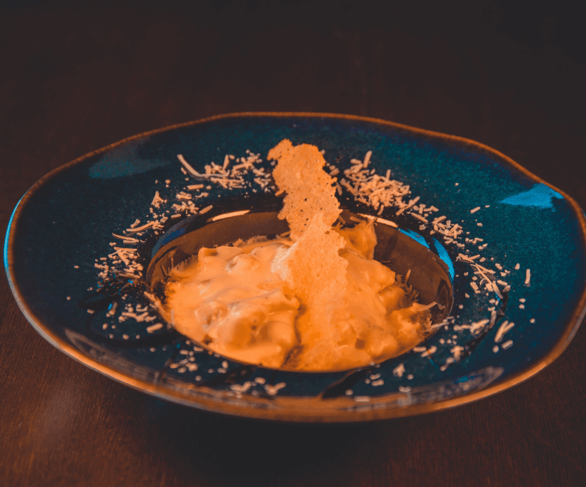
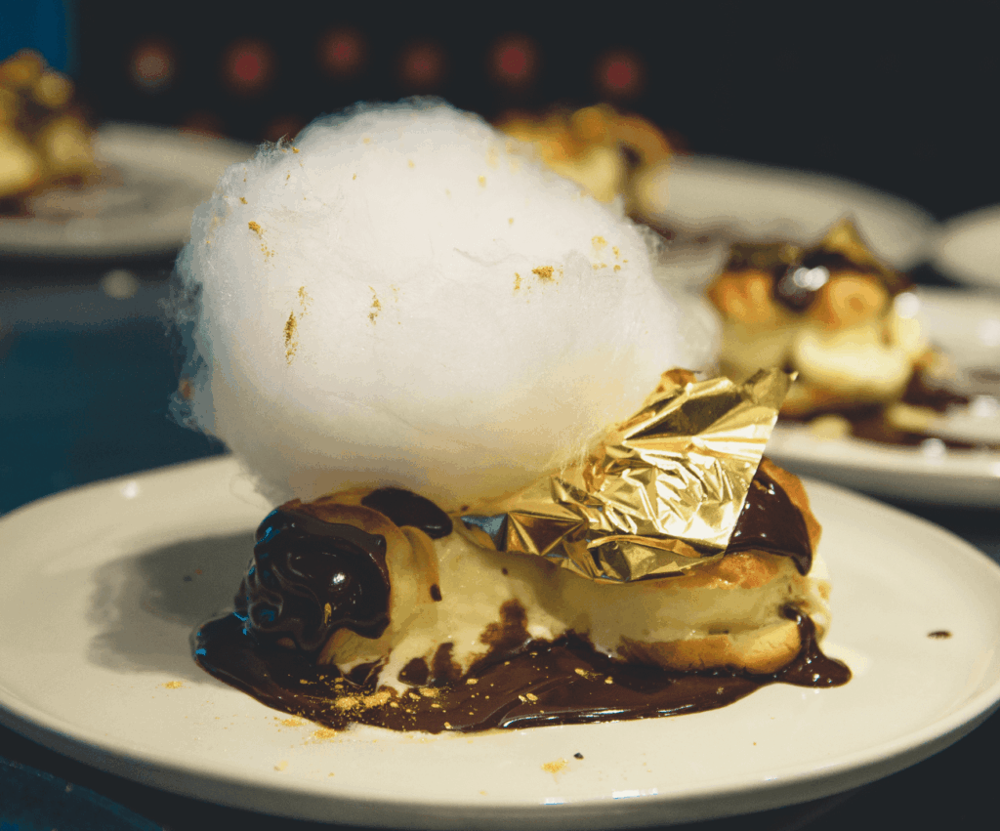
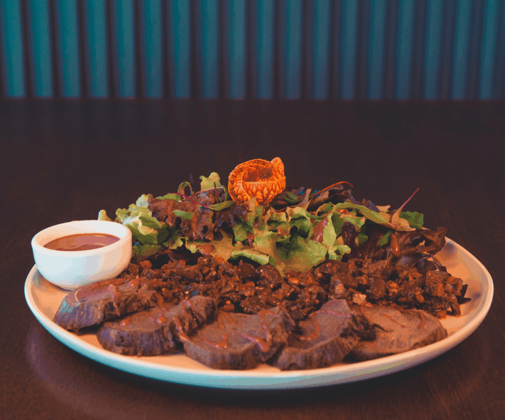
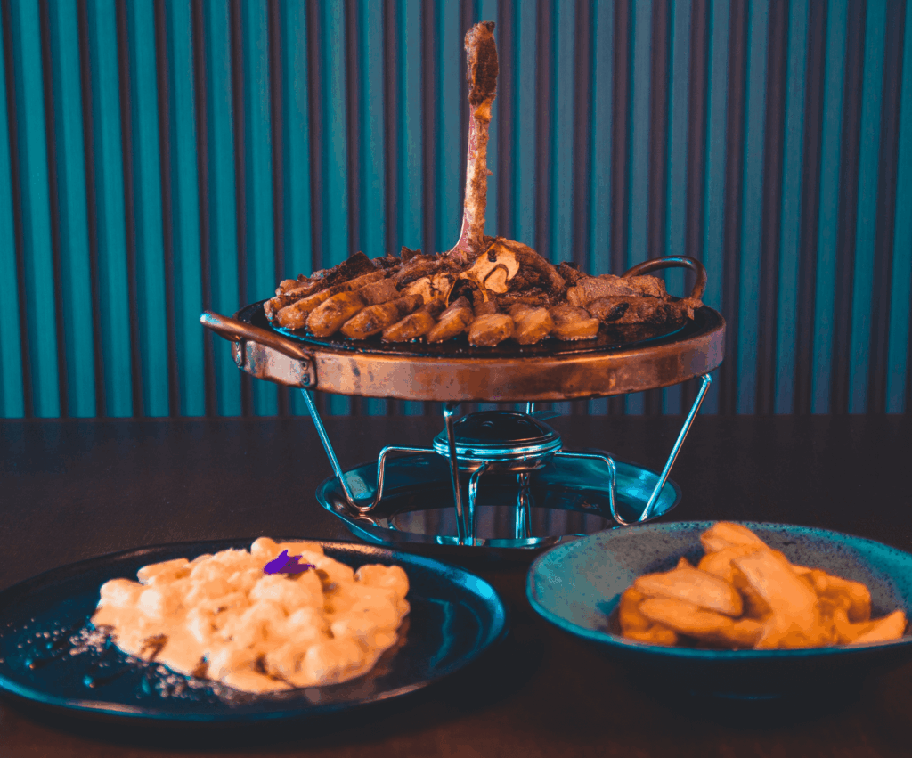

Nosso Cardápio
Risotto do Mar Sereno
Um risotto cremoso preparado com arroz arbóreo, vinho branco e caldo de frutos do mar, finalizado com camarões salteados e um toque de limão-siciliano. Um prato sofisticado que traz a leveza e frescor do oceano.

Filet ao Ouro Negro
Medalhão de filé mignon grelhado ao ponto, servido com molho de vinho tinto reduzido e cogumelos portobello. Acompanhado de purê de batata trufado, proporcionando um sabor intenso e elegante.

Penne Rustico al Pesto Rosso
Massa penne envolvida em um pesto de tomates secos, nozes e manjericão fresco. Servido com lascas de queijo parmesão e azeite extra virgem, remetendo ao verdadeiro sabor da cozinha italiana rústica.

Frango do Campo ao Mel e Mostarda
Peito de frango grelhado, marinado em especiarias e finalizado com molho agridoce de mel e mostarda Dijon. Servido com legumes salteados e arroz de ervas. Uma explosão de equilíbrio entre doce e salgado.
